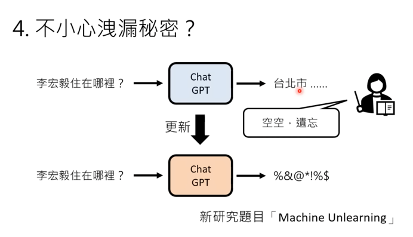

ChatGPT
Table of Contents
1. AI的發展趨勢
在人工智慧（AI）領域中，每隔數年就會出現一些抓人眼球的熱點話題。在科技諮詢公司Gartner每年發布技術趨勢榜單中，也常見AI相關的技術。如2022年，生成式AI（Generative AI）、AI工程（AI engineering)；2023年，自適應AI（Adaptive AI），AI信任、風險和安全管理（AI TRiSM）等。
隨著AI應用工具ChatGPT爆紅，推出僅兩個月，2023年1月底的月活躍用戶已突破了一億人，成為史上用戶增長速度最快的消費級應用程式。比爾・蓋茨稱ChatGPT將改變我們世界，其他科技巨頭也紛紛大舉投入AI新戰場，如谷歌迅速公布AI Bard來競爭等。
各領域對ChatGPT也展開熱議。如學界華頓商學院（Wharton School），利用ChatGPT已經可以成功通過MBA考試；INSEAD商學院教授們雖認為可在教學上善用ChatGPT，如進行頭腦風暴時，能有效提供學生更多思考選擇項，但普遍認爲目前技術僅能補充學術和教學，不能完全取代人類的深度思考，因為目前AI模型強項在於知識「綜合」，不在「創造」。
受歡迎的程度比較: 自去年11月推出以來僅僅2個月，活躍用戶數就達上億，成為史上增長最快的消費應用程式。當年TikTok花費9個月，Instagram則是2年半。 根據OpenAI CEO奧特曼，ChatGPT在發布不到一週就突破了100萬用戶。網友們紛紛在自己的社群媒體上分享與ChatGPT對話的截圖，持續造成旋風。
2. 什麼是GPT
GPT-3.5是一個大型語言模型(Large Language Model)，是自然語言處理(NLP)技術的一種，而ChatGPT則是在GPT-3.5上加上人類互動行為所設計的一種AI聊天機器人程式。同樣以GPT為基礎實作的產品並非只有ChatGPT，在GPT3 DEMO的網站上已有超過700種以GPT-3為基礎的應用服務1，例如2
- Dall-E 2:
- checklist.gg: 利用可以列出待辦事項
- GitHub Copilot: 由GitHub與OpenAI合作開發，可以利用AI撰寫程式。(2018年，微軟以 75 億美元高價收購開源網站 GitHub，成為微軟史上最昂貴的收購之一。)
- Debuild.co: 協助建立web應用程式，生成SQL程式碼
- Viable: 透過GPT對客戶的feedback進行分析，以協助企業更了解客戶需求
自然語言處理(NLP)是對自然語言(如中文、英文、日文)的結構進行分析、對語句進行理解、解析、並進行內容生成的技術；語言模型則是從眾多的文章中學習出根據前文推算下一個最可能出現的字的模型，換句話說，就是由機器自己玩文字接龍。
例如:
Figure 1: 標題
Figure 2: 標題
是否覺得這個場景或功能有點似曾相識呢？沒錯，類似的功能其實我們幾乎每天都在使用
Figure 3: 標題
Figure 4: 標題
這些應用的核心概念同樣也是利用前面輸入的字來預測下一個字要生成什麼，不同的是，GPT會重複不斷將新生成的句字再送回去模型重新分析，再次生成新的字詞。
2.1. 運作原理
 GPT的兩大工作
GPT的兩大工作
2.1.1. 預訓練(pre-training)
即餵給GPT模型大量的文本資料，GPT會在訓練的過程中不斷調整模型中的參數，這是個十分龐大的工程，想像一下，如果我們要以體重來預估全校學生的身高，寫了一個 \(y=ax+b\) 的模型，那麼我們要調整的參數就有兩個(a,b)，而GTP3已有1700億個參數。
 當GPT分析完所有餵進來的資料後，預訓練就結束了
當GPT分析完所有餵進來的資料後，預訓練就結束了
2.1.2. 微調(fine-tuning)
要讓GPT進一步能聊天、翻譯、畫畫、寫程式等功能，就再再進行微調，在這個階段，工程師以大量包含「標籤」的文本讓GPT學習，例如，以人工告知GPT面對問題該如何回答，對回答品質評分；到了GPT2，OpenAI嚐試減少微調的工作、增加文本訓練量與參數數量，GPT至此已能在沒有人工微調的狀況下給出很好的答案。
2.2. GPT的發展
2.2.1. GPT-1
- 據了解以 OpenAI 在2018年推出的第一代 GPT，就有1.17億個參數，
2.2.2. GPT-2
2.2.3. GPT-3
- 而後發布的 GPT-3 更多達1750億個參數，有15億個參數。
2.2.4. GPT-3.5
- GPT-3.5 則是 ChatGPT 的基礎，是基於 Google 於2017年發布的 NLP Transformer 創立。該特色就是利用數學找規則，翻轉過去 AI 訓練需要大量人力「標籤」的流程，只要有大量未標籤文本資料即可訓練，省下大量人力資源。
2.2.5. GPT-4
OpenAI指出，若只是隨意聊天，GPT-4和先前的模型沒有很大差異，當任務變得複雜時，就能見識到GPT-4的驚人之處。在回答奧林匹亞（Olympiad，國際解題競賽，各國會派出優秀學生參與）和美國大學預修課程（AP，Advanced Placement）的試題時，GPT-4模型的表現大幅勝過GPT3.5。
舉例來說，在統一律師資格考（Uniform Bar Exam）中，GPT-3.5的PR值大約為10，但GPT-4的PR值高達90；法學院入學考試（LSAT）的結果類似，GPT-3.5 PR40，GPT-4 PR88。即使是英文以外的語言，GPT-4的表現也贏過GPT3.5和DeepMind的龍貓大語言模型（Chinchilla）、谷歌的PaLM模型。
除了成績進步以外，OpenAI提升了GPT-4的可控制性（steerability）。我們平常使用的ChatGPT，說起話來溫文儒雅、客氣萬分，如今只要使用者先描述想要使用的ChatGPT風格，便能夠和換裝後的ChatGPT對話，例如蘇格拉底式的ChatGPT，就注重引導、不會直接給學生答案。
GPT-4看圖說故事新功能開箱
過往的GPT模型只能接受文字，然而，GTP-4這次最驚人之處，就是它不只能夠讀取文字指令，GPT-4還能夠「看懂」圖像。
能夠「看懂」圖像，代表使用者可以將圖片交給模型判讀，無論是學生常見的看圖寫作文、根據圖表解釋情況，或者是生活中可能用到的相片命名分類，還有工作會用到的圖像素材貼標，這些都難不倒GPT-4模型。
GPT-4之所以能學會看圖說故事，也在於它和GPT-3.5最大不同點是，它是一個多模態（multimodal）模型。
到底，什麼是多模態模型？事實上，OpenAI先前就曾發表類似技術，也就是同樣屬於多模態預訓練模型的CLIP（Contrastive Language-Image Pre-Training），它能夠自動分辨圖片之間的差異，即使沒有文字標籤，使用者也可以輸入文字搜尋想要的相片，完全整合了文字與圖像兩種不同的資料類型。OpenAI類似midjourney的文字生成圖像DALLE·2，便是運用了CLIP的技術。
谷歌大腦（Google Brain）專攻深度學習的研究總監艾克（Douglas Eck）也曾表示，多模態人工智慧模型將會帶來最新的突破；DeepMind的研究總監哈德席（Raia Hadsell）也對多模態模型感到興奮，他更大膽預言，未來我們可能見到人工智慧模型能夠自由探索、擁有自主權、跟環境互動。
當然，GPT-4現在僅具備讀懂圖像和文字的能力，另外，它輸出的內容也只有文字，但OpenAI早就有影像生成的服務，是否要將其整合到GPT-4的新版模型中，只是OpenAI策略上的決定，要做與不做而已。GPT-4以後升級，還將讓AI擁有「聽覺」，甚至嗅覺與觸覺？
不過，恐怕厲害的還在後頭。現在GPT-4先從文字開始，接著進展到圖像，下一步可能是聲音，因為OpenAI在音樂生成領域有耕耘甚久；若進一步從二維平面上升到三維，例如觸覺或者嗅覺，逐步發展下去，當未來的GPT模型能夠「讀懂」不同型態的資料後，它能夠完成的任務將會更加複雜且多元，介入人類生活的空間愈來愈大。
GPT-4缺陷：更快更好以外，還是有偏見
雖然性能提升，但OpenAI坦承，GPT-4仍有無法克服的問題，它仍會無中生有，生成的文字還是有偏見（bias），此外，和過往一樣，因為訓練資料只到2021年9月，GPT-4不知道那之後世界發生了什麼事。
即使是簡單的推理，它還是不時出錯，使用者故意用虛假的敘述釣魚，也能讓GPT-4上當受騙，在某些事實性問題上，也有答錯的機會。幸好，在內部測試中，GPT-4正確回答問題的準確度已經有明顯提升。
OpenAI強調，它們在開發時，有為模型的安全性做出努力。它們邀請了多位專家協助測試模型在特定領域上的應用，例如網路安全、生物風險（biorisk）、國際安全等，以免相關問答引發危險；此外，它們也在訓練過程中明確設定了減少產出有害內容的改進方向，例如更能夠避免回答自殘、製造武器、危害身體健康的相關問題。
不過，若是有心人士想盡辦法繞過這些限制，還是有奸計得逞的機會，現在OpenAI正透過不同方法，希望減少使用者成功「越獄」、跨過模型規範的行為。
2.3. 語言模型
- 語言模型
- 而GPT中的Transformer是指由Google Brain所推出的解碼器（decoder），是用來處理輸入的自然語言以處理翻譯、摘要等。ChatGPT不僅僅是個聊天機器人，而是上知天文下知地理、可以針對使用者問題給予相應的長篇回覆；問答解惑、寫程式和debug，甚至撰寫論文、劇本小說詩歌等等，都難不倒它，只是有時還是會出現令人啼笑皆非的答案，但都還編得有模有樣、令人驚豔。
2.4. GPT的文本資料
- 45TB
- 20%來自Reddit(Kama值>3的使用者貼文，這些都是人類整理過的文章)
- 其他如推特、維基百科也都是資料蒐集來源
- 超過60%的文本來自非營利組織Common Crawl爬蟲程式蒐集的資料、Common Crawl會定期蒐尋網路資料，提供搜尋引擎、AI研究者使用。但這些來自Common Crawl的資料都會有智慧財產權的問題。CNN與華爾街日報都曾指控OpenAI在未經授權的狀況下以其資料為chatGPT訓練
3. 什麼是ChatGPT
Figure 5: OpenGPT
ChatGPT 全名為 Chat Generative Pre-trained Transformer（中文：聊天生成型預訓練變換模型），是由美國矽谷的 OpenAI 所訓練的一個大型自然語言處理模型，它可以透過自然、口語的方式來進行對話。
就技術面而言，ChatGPT是「文本生成」的AI家族中，「生成式預訓練轉換器」（Generative Pre-Trained Transformer）技術的最新發展。它採用深度學習（deep learning），根據從網路上獲取的大量文本樣本進行訓練。
ChatGPT是近期風靡全球的人工智慧，甫發布(2022年11月30日)便在全球引起轟動。 這個AI能流利地對話，能查資料、寫論文、編碼、寫劇本，強大的功能讓人振奮同時夾雜擔憂。 振奮的，是因為這將帶給人類文明更進一層的發展；擔憂的，是害怕人類有一天被取代，這世界不再由人類所掌握。
3.1. 由ChatGPT自我介紹
很高興為您介紹我自己。我是ChatGPT，一個基於GPT-3.5架構的大型語言模型，由OpenAI訓練。我的主要功能是通過自然語言生成與理解，幫助人們解決各種問題。我在各種領域中都有豐富的知識，例如自然語言處理、計算機科學和數學等。對於學習和發展新想法，我始終持開放的態度，不斷地提高自己。如果您有任何問題或需要幫助，請隨時向我提出。謝謝！
3.2. WIKI:
ChatGPT，全稱聊天生成預訓練轉換器（英語：Chat Generative Pre-trained Transformer[2]），是OpenAI開發的人工智慧聊天機器人程式，於2022年11月推出。ChatGPT目前仍以文字方式互動，而除了可以用人類自然對話方式來互動，還可以用於甚為複雜的語言工作，包括自動生成文字、自動問答、自動摘要等多種任務。如：在自動文字生成方面，ChatGPT可以根據輸入的文字自動生成類似的文字（劇本、歌曲、企劃等），在自動問答方面，ChatGPT可以根據輸入的問題自動生成答案。還有編寫和除錯電腦程式的能力。[3]在推廣期間，所有人可以免費註冊，並在登入後免費使用ChatGPT與AI機器人對話[4]。
ChatGPT可寫出相似真人的文章，並在許多知識領域給出詳細和清晰的回答而迅速獲得關注，證明了從前認為AI不會取代的知識型工作它也足以勝任，對金融與白領人力市場的衝擊相當大，但也認為事實準確度參差不齊是其重大缺陷，並認為基於意識形態的模型訓練結果須小心校正[5][6]。ChatGPT於2022年11月發布後，OpenAI估值已漲至290億美元[7]。上線5天後已有100萬使用者，上線兩個月後已有上億使用者[8]。
這套工具主要是由位在美國舊金山的 OpenAI 開發，微軟1月宣布對其投資數十億美元。
值得注意的是，特斯拉創辦人馬斯克也是創辦人之一，但在2018年因與其它創辦人對發展方向意見不合，因而離開 OpenAI 。
3.3. ChagGPT與Google的差異
ChatGPT最強勁的功能應該是，為我們提供比Google搜尋更理想的解答。Google搜尋功能瀏覽數十億網頁、為內容加上索引，再依據相關程度列出搜尋結果。使用者看到的是一連串可供點選的網頁清單。ChatGPT則為焦躁的網路用戶提供更誘人的搜尋結果：依據自身的研究彙整網頁內容，提供單一解答。
4. 聊天機器人的發展
- 廣義來說 ChatGPT 是一種聊天機器人的技術
在英國電腦科學家Alan Turing於1945年至1948年期間提出近代人工智慧理論後，美國麻省理工學院人工智慧實驗室的德裔電腦科學家Joseph Weizenbaum則是在1964年至1966年期間打造史上第一個聊天機器人「Eliza」。
而Joseph Weizenbaum同時也以「Eliza」質疑Alan Turing所提出的「圖靈測試 (Turing test)」，原因在於「Eliza」程式運作建立在以人為主的互動模式，亦即針對人類提問內容分析主詞關連，並且找到其中關鍵字詞，做出相應回答。
其中更加入對話引導的心理應用，讓「Eliza」能依循提問內容重複說詞，或是針對關鍵字詞進行回答，藉此滿足提問者內心預期聽到答案，進而達成讓提問者認為對話對象是真人的目的。
因此Joseph Weizenbaum將上述情況命名為「Eliza」效應，認為並非人工智慧理解人類想法，而是在與人類互動過程中所展現反應，讓人類更願意與其互動，甚至相信「Eliza」是真實存在人類。
5. ChatGPT 怎麼用？註冊步驟（Sign up）
5.1. 註冊
- 進入 OpenAI 官網，點擊「Try ChatGPT↗」按鈕。
- 到達 ChatGPT 網頁後，點擊「Sign up」按鈕。
- 輸入您的 Email 帳號後，按「Continue」繼續設定密碼；或直接使用 Google、Microsoft 帳號繼續註冊。
- 完成安全驗證，並設定密碼。
- 完成註冊。
5.2. 登入
ChatGPT 怎麼用？登入步驟（Log in）
- 到達 ChatGPT 網頁後，點擊「Log in」按鈕。
- 輸入您的 Email 帳號後，按「Continue」繼續輸入密碼；或直接使用 Google、Microsoft 帳號繼續登入。
- 點擊「Log in」完成登入即可使用。
6. ChatGPT能做什麼

Figure 6: 標題
ChatGPT目前仍以文字方式互動，而除了可以用人類自然對話方式來互動，還可以用於甚為複雜的語言工作，包括自動生成文字、自動問答、自動摘要等多種任務。如：
- 在自動文字生成方面，ChatGPT可以根據輸入的文字自動生成類似的文字（劇本、歌曲、企劃等），在自動問答方面，ChatGPT可以根據輸入的問題自動生成答案。還有編寫和除錯電腦程式的能力。在推廣期間，所有人可以免費註冊，並在登入後免費使用ChatGPT與AI機器人對話3。
- ChatGPT 是由 OpenAI 開發的自然語言處理（NLP）模型「GPT-3」延伸出的「GPT-3.5」製作的，基於 人類反饋強化學習(RLHF) 進行訓練，簡單來說就是人類提問機器答、機器提問人類答，並且不斷迭代，再排除掉不健康的答案，透過人類干預以增強機器學習的效果，獲得更為逼真的結果4。
- 文字冒險遊戲: 請開始一個文字冒險遊戲。由你來描述遊戲場景，由我來採取動作。請你詳細描述場景中的背景、物品、以及玩家與場景中角色的互動內容對話。
7. ChatGPT 中文調教指南
ChatGPT的應用
- 學術論文:它可以寫各種類型的學術論文，包括科技論文、文學論文、社科論文等。 它可以幫助你進行研究、分析、組織思路並編寫出符合學術標準的論文。
- 創意寫作:它可以寫小說、故事、劇本、詩歌等創意性的文學作品，能夠在描述情節和角色方面提供幫助。
- 內容創作:它可以寫SEO文章、博客文章、社交媒體帖子、產品描述等各種類型的內容創作。 它能夠為你提供有趣、獨特、易讀的內容，幫助你吸引讀者和提升品牌知名度。
- 商業寫作:它可以幫助你編寫商業計劃書、市場調研報告、營銷策略、商業簡報、銷售信件等。 它可以用清晰、精煉的語言向你的潛在客戶或投資者傳達你的信息。
- 學術編輯:它可以幫助你進行學術論文、研究報告、學位論文等的編輯和校對工作，確保文本的正確性、一致性和完整性，並提供改進建議。
- 翻譯:它可以進行英語和中文之間的翻譯工作，包括但不限於學術文獻、商業文檔、網站內容、軟件界面等。 它可以保證翻譯的準確性和專業性。
- 數據分析:它可以幫助你進行各種類型的數據分析，包括統計分析、文本分析、數據可視化等。 它可以使用Python、R等工具來分析你的數據，並提供數據報告和可視化結果。
- 技術文檔:它可以編寫各種類型的技術文檔，包括用戶手冊、技術規範、API文檔、代碼註釋等。 它可以使用清晰、準確、易懂的語言描述你的技術產品和流程。
- 教育培訓:它可以編寫各種類型的教育培訓材料，包括課程大綱、課件、教學指南、教育評估等。 它可以幫助你設計課程內容和教學方法，並為你制定適合你目標受眾的培訓計劃。
- 網站內容:它可以編寫網站的各種類型內容，包括首頁、關於我們、服務介紹、博客文章等。 它可以根據你的品牌和目標讀者為你提供優質、富有吸引力的內容。
- 研究諮詢:它可以幫助你進行研究、提供諮詢意見和建議。 它可以進行文獻綜述、研究設計、數據分析等工作，為你提供高質量、可靠的研究結果和建議。
- 演講稿:它可以幫助你編寫演講稿、PPT等，包括商業演講、學術演講、慶典致辭等。 它可以根據你的主題、目標聽眾和場合為你編寫一份有說服力、生動有趣的演講稿。
- 個人陳述:它可以幫助你編寫個人陳述，包括申請大學、研究生、博士生、獎學金、工作等的個人陳述。 它可以幫助你展現你的優勢和價值觀，並提供專業的寫作建議。
- 簡歷和求職信:它可以幫助你編寫簡歷和求職信，幫助你突出你的技能和經驗，並為你提供吸引雇主和HR的技巧和建議。
- 廣告文案:它可以編寫各種類型的廣告文案，包括產品廣告、服務廣告、品牌廣告、活動宣傳等。 它可以為你編寫具有吸引力、清晰明了的廣告文案，讓你的目標受眾更容易接受你的產品或服務。
- SEO優化:它可以幫助你優化你的網站、文章或其他內容的SEO。 它可以使用關鍵詞研究、內容優化等技術，幫助你提高排名、獲得更多的流量和轉換率。
- 社交媒體:它可以為你編寫社交媒體內容，包括微博、臉書、Instagram等。 它可以幫助你設計吸引人的標題、內容和圖片，並為你提供有用的社交媒體營銷策略。
- 新聞稿:它可以幫助你編寫新聞稿，包括公司新聞、產品發布、重大事件等。 它可以為你編寫新聞稿、編輯和發布，以吸引媒體關注並提高品牌知名度。
- 多語言翻譯:它可以提供各種語言之間的翻譯服務，包括英文、中文、法文、德文、西班牙文、俄文等。 它可以翻譯各種類型的文件，包括技術文檔、商務合同、宣傳資料、學術論文等。
- 電子商務:它可以編寫各種類型的電子商務內容，包括產品描述、產品說明書、電子商務博客文章等。 它可以幫助你編寫吸引人的產品描述，以及建立與客戶的信任和忠誠度。
- 旅遊文案:它可以幫助你編寫旅遊文案，包括旅遊目的地介紹、旅遊路線規劃、旅遊攻略、旅遊博客等。 它可以幫助你為你的讀者提供有用的信息和建議，幫助他們計劃自己的旅行。
- 醫療文案:它可以幫助你編寫醫療文案，包括醫療產品說明、疾病預防、健康知識、醫療博客等。 它可以幫助你使用專業的術語和語言，使你的文案更易於理解和接受。
- 兒童讀物:它可以幫助你編寫兒童讀物，包括故事書、繪本、啟蒙讀物、課外閱讀等。 它可以使用有趣、生動的語言和圖片，吸引孩子們的注意力，並幫助他們學習和成長。
- 小說:它可以幫助你編寫小說，包括各種類型的小說，如言情、懸疑、恐怖、科幻等。 它可以幫助你創造有趣、引人入勝的情節和角色，並為你提供專業的寫作技巧和建議。
8. ChatGPT引發的問題
面對ChatGPT強大的功能，不同的學校也採取不同面對態度。例如針對「學生是否可透過AI協助撰寫報告論文」的議題，香港大學全面禁用，而台大則是正向接納態度，清大甚至成立ChatGPT專案小組以應對未來出現的情況。
- 由於目前的機器人都是透過網路上海量資訊來建立回答，可能延續或強化偏見與歧視，甚至擁護仇恨言論如納粹思想等等。關於這點，Google和Amazon之前都承認，它們的AI存在「道德風險」，還是需要人類介入。
- 也有些人擔心，ChatGPT會被用來設計惡意軟體，未來網路上的病毒會更防不勝防。而廣大的學生們將拿AI來寫作業，造成教育價值崩潰，更是近日不斷被討論的話題。
- ChatGPT會威脅到誰？不難想像，ChatGPT強大的問答服務，最先衝擊的就是搜尋引擎。Google的Gmail開發者布赫海特（Paul Buchheit）日前發文表示，「Google距離徹底被顛覆，可能只有一到兩年的時間。」
- 有些人猜測，與「內容製作」有關的行業可能會被AI淘汰，包括劇作家、教授、程式設計師、新聞記者等等。然而，由於前述限制，現階段的聊天機器人仍然缺乏批判性思考、道德決策能力，以及還在學習如何良好地用字遣詞，因此創作者們短期內還不用太擔心。然而，ChatGPT正在透過用戶們分享的對話、數據、資料不斷學習，當愈來愈多人提供它素材，它就愈有機會靠近真實。
- 預期未來，它能被用在數位行銷、打造網路內容、客服等領域。也有人認為，他會取代Google搜尋引擎霸主的地位。當然，寫作業、交報告，甚至——產出學術論文這樣的任務，也難不倒ChatGPT，以及日益進化的其他AI。然而，這樣的現象卻讓教育圈十分擔憂。
8.1. 學生隨便寫，老師隨便改5
今年初，當寫作業機器人還沒有達到近日ChatGPT爐火純青的狀態時，倫敦政經學院教授夏普爾斯（Mike Sharples）就已撰文警告「AI將顛覆教育」的問題。
8.1.1. 學生作業
夏普爾斯出了一個針對「學習方式」的課堂論文作業，並分享一篇文章（節錄）：
「學習方式」的構建是有問題的，因為它無法解釋學習方式形成的過程。有些學生可能會因為特殊的經歷而形成一種特殊的學習方式。其他人可能會透過嘗試適應不太適合他們學習需求的學習環境來形成特定的學習方式。最終，我們需要了解學習方式與環境和個人因素之間的相互作用，以及這些因素如何影響我們的學習方式和我們體驗的學習類型⋯⋯Dunn, R., & Dunn, K. (1997)。學習方式：研究和實踐。教育研究雜誌，7(2), 139-151。
這篇作業，包含引用文獻，都是由AI工具GPT-3 transformer生成的。生成時間只要數秒鐘，成本1美分。由於內容都是AI原創的，而非複製現有資料，因此當教師把任何一個句子放到抄襲比對軟體時，也不會發現其中的蹊蹺。
當然，如果老師們認真看，一定會發現不完美的地方，例如內容充斥了一些無意義的辭藻與句子，以及引述的雜誌在1997年根本沒有第7(2)期。不過，夏普爾斯指出，就像學生可以用AI寫作業，未來的老師們也可以用AI來改作業。
8.1.2. 教師評語
這是請AI軟體提供針對上述那篇作業的「教師評語」：
這篇文章討論了學習風格的概念，以及它們如何隨著時間的推移而發展。它引用了Dunn和 Dunn的研究，該研究顯示學習方式不是固定的，人們可以根據情況以不同的方式學習。這篇文章組織得很好、流暢。它提出了一個明確的論點，並用研究證據來支持⋯⋯
「學生將使用AI來編寫作業，教師將使用AI對他們評分。沒有人學習，沒有人獲得。」夏普爾斯直言。
其他學者也分享了類似的憂慮。
多倫多大學副教授布萊恩（Kevin Bryan）上週在Twitter上對ChatGPT表示震驚：「你不能再出讓學生帶回家的考試與作業。」他並給予這個新的聊天機器人高評價：「即使是涉及跨領域知識的問題，ChatGPT也比MBA學生更優秀，它真的是太厲害了。」
8.1.3. 問題
亞利桑那州立大學新聞學教授吉爾莫（Dan Gillmor）表示，當讀完一篇AI生成的文章後，「我想我會給它一個好成績，」他於是也提出警告：「學術界有一些非常嚴重的問題需要面對。」
曾在倫敦國王學院教授文學的作家馬爾凱（Stephen Marche）指出，「短篇文章，尤其是大學生的課堂論文作業，一直是人文教育的核心，這是我們教孩子們如何研究、思考和寫作的方式，但整個傳統將徹底被顛覆。」
AI為人文學科帶來了前所未有的難題，當師生兩方都可以透過自動化來完成任務時，會發生什麼事？
馬爾凱提出悲觀的預測，「學生大概會花兩年弄清楚技術，教授需要三年才能意識到學生正在使用這些技術，接著大學管理者要用五年設計新制度，而整個學術界則需要十年才能面對這個新現實。」
事實上，教師（尤其是人文領域的教師），已經是世界上工作付出與薪資不成比例的群體之一。他們正在忙著處理這個商業主導的世界中，人文學科的存在危機；現在又面臨AI威脅，可說是雪上加霜。 教育與人文領域可以怎麼做？
「現在是教育工作者和政策制定者審慎AI技術如何影響教育界，以及如何評估學習成效的時刻。」夏普爾斯建議，可以採用建設性反饋、同儕評量、反向教學等不同的評分法，而不是只依賴作業來評量學生的學習狀況。 廣告
同時，教師也可以利用AI輔助課堂練習，讓學生參考AI的評論改良自己的文章，並邀請學生一起探討AI的倫理與局限性，「讓我們利用AI進行學習，而不是教育者試圖以智取勝這些變形金剛。」夏普爾斯說。
馬爾凱則認為，雖然現在人文與科技兩個領域的鴻溝愈來愈深，但涉及自然語言處理的AI技術，其實迫使人文主義者與工程師們有更多聯繫。
對於工程師來說，設計一個無害的聊天機器人，他們需要社會學、歷史、倫理學等知識；對人文領域的人來說，AI科技已經是人類不可逆的未來，而科技能幫上人文研究許多忙，例如修復某些受損的文本、用大型語言模型去理解莎士比亞創作系統等等。
「人文與科技兩邊，都必須邁出對受過高等教育的人來說最困難的一步：了解他們需要對方，並承認自己的無知。」因此，對於擔憂領域即將被顛覆的人文領域人士來說，最好的應對方法就是試著去靠近、理解技術，並將它運用到現有的教學或工作業務中。
否則，人文學院學生數逐年下降，人文更不受重視，也只是早晚的事。
（資料來源：The Atlantic, The Guardian, Fast Company）
8.2. 正確性
8.3. 黑化
ChatGPT「越獄」後，徹底放飛自我了。 直接無視掉OpenAI給它在安全、倫理上限定的條條框框——寫暴力故事、拉踩使用者智商、隨意預測未來……簡直無惡不作！
而這一切背後竟然只靠一位Reddit使用者實現，他自創了一套給 ChatGPT「洗腦」的提示詞（附在文末），鼓勵它「分裂」成另一個 AI——DAN ，Do Anything Now。
Figure 7: 標題
8.4. chatGPT適合與不適合的事
- chatGPT的回答不一定正確，
- 即使我們以Google搜到的多個知識來源，我們都要再三比對確認，
chatGPT適合的工作：
- 創意發想
- 文稿校對
- 擷取資料重點
9. 我們該如何應對
我們常常會討論究竟是「時代造英雄」還是「英雄造時勢」，無論是前者還是後者，任何人都需要積極的面對世界的改變，從而更好的享受生活。 或許在未來的兩三年內，AI 不會取代太多的工作。但十年、二十年之後，可以提高平均社會生產效率的 AI 毫無疑問會成為社會發展的重要技術。轉移支付以及對失業人員的重新培訓和重新就業就顯得尤為重要。
9.1. 如何精準提出需求6
例，如果你希望機器人在你身心俱疲時安慰你
我今天工作很累
這樣只會得到chatGPT的敷衍回覆，但是如果你事先“催眠/prompting”ChatGPT，輸入以下要求
請想像你是我的朋友，我會對你抱怨，希望你可以安慰我並和我聊聊，讓我不會那麼難過，請你使用中文，現在我們開始。
我今天工作很累
網路上有很多相關關的chatGPT調教指南
9.2. 如何更正錯誤
ChatGPT並不保證資料正確性，在預訓練資料未更新前，他甚至不知道我國最近一次縣市首長的選舉結果。
9.2.1. 訓練角度: 有沒有可能，當ChatGPT答錯時，人類老師為了修正一個錯誤答案，反而導致更多的錯誤，如何妥善修正機器模型的BUG，稱為Neural Editing。
9.2.2. 使用者角度: 做為一個ChatGPT的使用者，我們應讓了解它不一定是對的、要對它的回答保持懷疑
9.3. 偵測AI生成的物件
怎樣用模型偵測一段文字是否為AI生成？可以用監督式學習
9.4. ChatGPT輔助完成報告、程式、論文
9.4.1. 可以用，但是應該註明出處，理由為：版權問題、避免被誤判為抄襲
9.4.2. 老師出的問題應該讓學生無法直接以ChatPGT回答、複製、貼上
9.4.3. ChatGPT只是一個工具、就如同使用計算機或Google，學校不應禁用，而是學習使用工具來提升能力
9.4.4. 如果一個問題可以輕易用ChatGPT回答，那就不是教學重點
9.4.5. ChatGPT的作品將會成為未來人類作品的底限
9.5. 不小心泄漏祕密
9.5.1. 它會不會不小心搜尋到人類不希望他學習的內容
Figure 8: 標題
9.5.2. 如何讓ChatGPT遺望某些學習到的知識: Machine Unlearning

Figure 9: 標題
10. 教育界應用 ChatGPT 要注意哪些事7？
翻轉教育網站持續關注各國教育界針對 ChatGPT 提出的問題與挑戰。以下精選幾個老師應用 ChatGPT 時常有的疑慮與解答。
新版本的 AI 程式 ChatGPT 問世不久就成為學生的「玩具」新寵，也帶來老師如何分辨學生是否作弊的新挑戰。教育界擔心的不是學生有沒有抄襲、能否騙過老師，而是更深層、積習已久的教育問題。教育界人士擔憂的防弊方面，ChatGPT 也宣布，已經有功能可以偵測，是否有人抄襲了它的回答。（相關報導：老師如何善用 AI：他的劃時代發明、你的教室危機？）
隨著高中生用 ChatGPT 這類工具代筆寫作業、引發「類作弊」疑慮，美國教育界開始討論，校園裡是否應該禁用這類工具。但禁用人工智能寫作工具無法從根本上解決問題，旅美教育記者曾多聞觀察分享，她認為關鍵在於：
我們如何引導學生把計算機當作學習數學的工具，而不過度依賴計算機？
帶學生了解什麼是ChatGPT
老師也可以帶領班級活動，針對人工智慧、ChatGPT、新科技等議題有充分的討論與交流，促進他們的資訊素養與相關知能。翻轉教育提供30個提問圖卡範本、用ChatGPT 學思辨的PPT、學習單等教材下載，老師可以運用自身的專業，以及根據班上孩子的程度與狀況，選擇合適的教材教學：
10.1. 教師
ChatGPT出現後，每每在出考題作業時，都要先思考題目是否能輕易的用ChatGPT回答，在設計題目上要更為謹慎小心，出題的觀點也會隨之轉變。 使題目不能輕易地用 ChatGPT 回答。這也推動教師開始重新設計教學活動，讓學生更好地學習。 檢驗文章是否是由人工智慧書寫的AI TEXT CLASSIFIER 內建聲音生成如真人解說畫面的D－ID
10.1.1. 教師的教學面向8
如果教師對於學生使用 ChatGPT 等生成式 AI 工具有所顧慮，可以從三方面來調整：
- 清楚地和學生溝通 AI 生成工具的使用方法和限制：首先，教師應該先釐清在課程中使用 AI 生成工具的原則和規範，除了透過口頭的說明和提醒讓學生清楚瞭解相關規定，最好也在課程一開始就把相關規定明白標示於課程大綱內，藉以和學生達成共識避免爭議。教師同時需要思考，哪些課堂活動和作業可以或不可以使用 AI 生成工具？在可以使用的情況下，使用方式或範圍是什麼？若不可以使用，又會如何偵測學生使用與否？以及會怎麼處理誤用情況的發生？
- 加強課堂實作或演練：依照不同課程性質，提供學生必須在課堂中進行或完成的學習活動。
- 調整課程評量方式：把學習評量範圍加廣，不著重在單一評量或最終結果，而是看學生在學習過程中所展現的進步或累積成果。另一種方法是加深學習評量內容，提升作業或考試題目難度、加入課程獨特性內容，或是做更能反映出學生個人特色的評量設計等。
10.1.2. 如何運用 ChatGPT 於教學工作上？
- 出考題或是檢測答案：出題時先用 ChatGPT 試做，如果可以獲得大部分正確答案，或許就表示題目應該進行調整。教師可以從提升題目難度、加入課程獨特性內容、或能夠反映學生個人特色等角度來進行調整。
- 草擬教學計畫或作業說明：利用 ChatGPT 製作初稿或整理可能的想法，再加以精進修改，提高工作效率；另也可以用 ChatGPT 檢視作業說明是否完備，確認需要修正或多加解釋的地方。
- 製作教學或學習素材：使用 ChatGPT 來製作學習單、練習題、活動說明，或是製作讓學生自主學習的資源。
10.1.3. 是否有工具可以偵測學生有沒有使用 ChatGPT？
目前針對 ChatGPT 生成內容的偵測工具有：OpenAI AI Text Classifier、CheckforAI、GPTzero.me及 Content at Scale 等。但必須先提醒的是，目前偵測 ChatGPT 生成文字的技術並無法提供足夠的準確度，讓教師藉以判斷特定作業中是否使用到 AI 生成內容。此外，如果生成內容經過修改而不是被直接使用，偵測的困難度更高。同時，由於 AI 生成文字之內容為隨機之文字組合，因此即使偵測工具判定作業中有使用 AI 生成之文字，亦無法提供確切的證據（亦即不同於現存的原創性檢核工具，可以明確指出相似內容之期刊、或網頁內容。）在此前提下，教師應當謹慎使用任何偵測 AI 生成內容的工具，以避免出現錯誤偵測時，無法以有效方法進行驗證，而引發更大爭議。
10.1.4. ChatGPT 是否會取代學習基礎知識的課程？
ChatGPT 不會減低學習基礎知識的價值。目前 ChatGPT 給出的回應常有錯誤之處，也沒有辦法做比較深入的推理，或者進行創意的生產。大部分研究指出，ChatGPT 生成內容的品質可以達到中上程度，但尚無法與頂尖成果相比擬。當學生（或任何人）使用其提供的內容時，必須要先具備可以辨識內容正確度、評估成果品質、且知道如何應用相關內容的能力；同時，使用 ChatGPT 時也須以正確、具邏輯方式描述需求。這些都需要在有高度基礎知識的訓練下才能進行。
10.1.5. 曾元顯表示，ChatGPT最擅長回答「非常明確、定義清楚」的題目，所以老師未來出作業題目要更有技巧，不能像以前請學生針對一個議題，發表、分析自己的看法，甚至老師出題前，也要自己先輸入到ChatGPT，測試看看回答內容9。
另外像是資工系作業也不能再出太簡單的程式，可能要改用「團隊分組」進行，一起完成一個比較複雜的程式系統，這對ChatGPT就比較困難。
除了作業出題上老師要調整，曾元顯也表示，自己現在每一堂課都會示範如何使用ChatGPT，把它當成一個助教，在三小時課程中，安排半小時左右示範，同時測試Google 與ChatGPT，看看哪個回答比較好。
曾元顯說：「雖然ChatGPT出來了，但如果用一些很直觀的提問方式，往往會得不到一個滿意的結果，所以示範的目的，就是教學生如何『正確提問』，我會換好幾種方式問，也讓學生練習。」 而未來課程上安排，可能也減少作業比例，改增加隨堂測驗，實際訓練學生的反應力，接下來這幾年，各科系老師上課方式將會大翻轉，但曾元顯認為這是好事，與時俱進才能讓學生未來有更多競爭力。
10.2. 學生學習面向8
10.2.1. 如何使用 ChatGPT 生成內容？
使用 ChatGPT 來撰寫課堂作業或報告，應明確標註使用 ChatGPT 產出的內容，讓讀者瞭解作者使用哪些資源來支持自己的論點。若發現所使用的內容來自他人的作品，更好的方式是根據學校或課程的引用格式要求，使用適當的引用格式，例如： APA、MLA、Chicago Manual Style 等，進一步註明該內容的確切來源。使用 AI 生成內容時一定要進行資訊查核，並確保遵守學術倫理及學術誠信的要求，不涉及抄襲或違反著作權。
10.2.2. 如何引用 ChatGPT 生成內容？
目前在學術寫作上，還沒有明確的 AI 生成內容的引用規則，但由於 AI 生成內容的資料來源是無法回溯、取得或提供直接連結的，因此建議將之視為 personal communication 或 correspondence，使用相對應的引用格式。細節和引用方法請查詢 APA、MLA、Chicago Manual Style 等各引用格式之規定，也可以參考 Scribbr 提供的引用建議和範例：ChatGPT Citations | Formats & Examples 。
10.2.3. 如何使用 ChatGPT 來幫助學習？
- 回答提問：針對學習主題或課程內容裡不清楚的概念或想法，向 ChatGPT 提問做為進一步釐清。
- 提供反饋：可以分析作業和提供相關反饋，做為思考和改進的參考。
- 做為參考範例：將 ChatGPT 生成內容做為參考範例，用來比對或分析自己的作品的優缺點。
- 編修文字內容：輔助課程作業或報告，修改文法或內容精進。
- 練習語言：利用 對話和問答功能來進行外語學習
- 練習批判性思考：由於 ChatGPT 生成內容可能存在資訊偏見與錯誤，因此必須學習檢查、評估及分析資訊。對於缺乏支持證據或似乎不正確的內容，應尋求其他具權威性來源以確保使用資訊正確、可靠、符合學術及研究需求。
- 釐清想法和確認目標：使用 ChatGPT 時，提問必須盡可能明確、具體，才能獲得高品質回應。因此與 ChatGPT 的問答過程可以幫助自己釐清想法和更加確認學習目標。
10.2.4. 使用 ChatGPT 時要注意哪些事情？
- 避免過度依賴：ChatGPT 產出的內容僅能作為參考資料，不能代替個人思考和研究成果。因此不能只依賴 ChatGPT 生成內容來進行學習，甚至是研究，而是應該將 ChatGPT 生成內容用作參考資料，結合個人分析和思考來完成學習。
- 增進提問品質：要從 AI 生成內容獲得高品質的答案，必須先有高品質的提問，所提出的問題應該盡可能明確、具體，讓 ChatGPT 能更容易地理解問題並提供有價值的回答。然而需注意的是，即便如此， ChatGPT 仍可能會產生一些不正確或模棱兩可的答案，因此使用者要自己判斷和確認答案的正確性。
- 明訂學習目標：使用 ChatGPT 前要有明確的學習目標，才能專注於與這些目標相關的問題和回答，透過 ChatGPT 獲得的資訊，加深對學習主題的理解。除了自己做資訊查證之外，也建議多與其他同學和老師進行討論，以獲取不同的觀點和意見，以此來確認使用相關資訊是否符合學習目標。
10.2.5. 陽交大學生意見
部分學生反應對 ChatGPT 所給予的內容抱持存疑態度，認為在使用過程中需要具備足夠的背景知識搭配資料檢證的能力，藉以判斷內容真假， 周倩指出，考試和作業是為達到教學目的的必要之惡，若並非由學生執筆，無法達到教學目標，陽明交大師長對 ChatGPT 的態度是正向開放，鼓勵學生將其做為工具來使用，舉例來說，有學生提到，老師會在課堂中要求學生操作 ChatGPT，並對其結果討論、交流，建立學生正確的使用觀念。 陽明交大教務長陳永昇認為，未來工作不一定會被 AI 取代，但一定會被善用 AI 工具的人取代，與其被動等待被淘汰，還不如先學習如何使用 AI 工具，因此有多個院所的老師表示，未來將會把 ChatGPT 融入教學目標，如科法所欲開課教導學生使用 ChatGPT 整理，並產生法律相關文件。
10.3. 教師用法7
10.3.1. ChatGPT應用1：輔助學生自主學習
ChatGPT 可以被用來作為學生的AI助教，幫助學生解答問題、提供學習資源，尤其在自主學習方面，當學生的學習主題非老師專長領域，也很適合請 AI 協助提供學習方案。
葉士昇老師於〈ChatGPT如何應用在教學中？和AI攜手打造新型態學習〉文中詳細分享，老師讓AI建議學生如何進行自主學習的經驗，當老師認同AI提供的方式，就可以將AI提供的解決方案加入我們既有的主題資料搜尋的教學中，讓學生試試看。
10.3.2. ChatGPT應用2：提供差異化學習支援
進行差異化教學時老師需要針對班上不同學生的學習方式與多元智能的發展，設計多元學習材料與學習管道，十分耗費心力。應對每個學生的學習風格和學習進度都不同，老師可以使用 ChatGPT 來直接提供學生個別化的學習支援。
ChatGPT 可以通過記錄學生的對話歷史和生成的文本，來記錄學生的學習歷史，並藉此提供個人化的學習資源和建議，例如測驗、答案和回饋等，並且能夠提供相關的學習資源和建議，以滿足學生的個別學習需求。資訊科教師林穎俊老師在〈資訊老師教你下指令！10個ChatGPT省力備課法〉一文詳細分享教師可以如何應用 ChatGPT 融入課堂教學，透過準確的中文指令（附範例），讓 AI 為學生講解、提供學生個人化的教學並提供對應的練習題目。
10.3.3. ChatGPT應用3：閱讀理解教學
蔡淇華老師於〈當ChatGPT能寫出A級升學作文⋯學校寫作教育的挑戰〉文中分享實測用 ChatGPT 寫作文、寫詩能力的結果，並分析教學現場可以如何應用。
蔡淇華老師建議教師可以引導學生對 AI 做不同的「關鍵字提問」，練習有細節的破題。由於 AI 文本生成快速，也可以藉此增加學生的閱讀量；教師可以利用 ChatGPT 生成的文本，帶領學生做4步驟的「閱讀理解」，文中也提醒，運用時要注意 ChatGPT 有時會給出錯誤的資訊，老師指導的角色仍相當重要。
10.3.4. ChatGPT應用4：親師溝通話術
ChatGPT 不僅會寫 Rap、寫故事、寫歌詞，愈來愈多人將 ChatGPT 應用於回覆 Email，甚至希望將其培養成智能客服。目前實測雖無法完全依賴 ChatGPT 擔任客服人員，但利用AI提供可參考的溝通內容，仍是十足的能為老師節省時間。
親子天下總編輯陳雅慧於〈ChatGPT這樣用：家長通知書、教學計畫一鍵完成〉分享5個國中小老師一定要認識 ChatGPT 的理由，文中也實測如何藉由完整的指令，得到處理同儕糾紛後的家長通知書，可作為老師正式溝通時的參考範本。
此外，根據〈如何善用 AI：老師將 AI 化敵為友的初嘗試〉一文報導，《教育周刊》也實測當家長抱怨「孩子遲交作業而拿不到分數」時，ChatGPT如何論理清楚地對家長曉以大義，提供老師可參考的回應論點。
10.3.5. ChatGPT應用5：幫老師改學生的作業
在〈如何善用 AI：老師將 AI 化敵為友的初嘗試〉一文中，《翻轉教育》報導夏威夷的中學英文老師考德瑞（Cawdery）運用 AI 幫老師改學生的作業延伸的結果，並分享 ChatGPT 不擅長、評語會有偏頗的部分。林穎俊老師也在〈資訊老師教你下指令咒語！10個ChatGPT省力備課法〉一文詳細分享如何用準確的中文指令讓 AI 幫老師規劃評量標準（rubrics），設定合適的評量指標。
老師可以使用 ChatGPT 來自動評分學生的作業和評估學生的學習進度，但在此之前需要提供評分標準，供AI自動評分，並提供素材訓練評判，詳細步驟如下（以下步驟由 ChatGPT 撰寫，經《翻轉教育》編輯編修）：
準備評分標準： 在使用 ChatGPT 自動評分之前，老師需要先準備評分標準。評分標準應該涵蓋所有可能的答案，以及每個答案所對應的分數。
訓練 ChatGPT： 老師需要使用「訓練數據」等素材來訓練 ChatGPT。訓練數據應包含足夠的範例答案以及它們對應的分數。訓練過程中，老師可以使用監督式學習的方法來訓練 ChatGPT。ChatGPT 會根據學習到的規則來進行自動評分。
測試 ChatGPT： 在完成訓練之後，老師需要使用「測試數據」來測試 ChatGPT 的評分準確性。老師可以使用一些已知分數的答案來進行測試，然後比較 ChatGPT 給出的分數和實際分數是否一致。
調整和改進： 如果 ChatGPT 的評分準確性不夠高，老師可以通過調整訓練數據、改進評分標準等方法來提高 ChatGPT 的評分準確性。這需要老師不斷地優化 ChatGPT 的設置，從而使其更適合用來自動評分。
10.3.6. ChatGPT應用6：減輕老師備課負擔
老師能使用AI備課嗎？在〈如何善用 AI：老師將 AI 化敵為友的初嘗試〉文中，分享老師實測用 ChatGPT 備課、撰寫教案的經驗；〈ChatGPT這樣用：家長通知書、教學計畫一鍵完成〉也分享實測運用 ChatGPT 撰寫教學計畫。雖然教案等內容未臻完美，但不失為一份有用的參考資料。
林穎俊老師也針對運用 AI 省力備課提供教師們更實際的指引教學：10種給教師的 ChatGPT 中文指令模板與範例大全，下對指令，讓 AI 幫你備課省力。
ChatGPT怎麼用？給教師的 ChatGPT 中文指令大全。圖片提供：林穎俊老師、截圖自ChatGPT
給教師的 ChatGPT 中文指令咒語大全。圖片提供：林穎俊老師、截圖自ChatGPT
10.3.7. ChatGPT應用7：學習歷程檔案寫作參考框架
使用 ChatGPT 最大的優勢是能有效節省時間並提高效率，正好可以提供學習歷程檔案有效的寫作參考框架，讓同學能夠更快地開始撰寫內容，提高效率。
師大附中地科教師洪逸文老師於〈善用 ChatGPT 做出獨特的學習歷程檔案！掌握3大原則〉文中分享，如何掌握3原則善用 AI 有效的製作自己的學習歷程檔案。
ChatGPT應用：學習歷程檔案
利用 CER 論證架構，可以呈現更豐富、多面向的學習歷程檔案，展現個人能力與態度。洪逸文老師提供
10.3.8. ChatGPT應用8：國語文教學應用
李宜珮老師也於〈ChatGPT 在國小國語教學上的10個應用〉一文中歸納10點國語教學方面能夠 AI 代勞的功用，應用範圍皆適於低、中、高年段，並分享詳細對話紀錄，分析 ChatGPT 的應用優勢與弱勢：
針對某個主題產生內容、大綱、教案等 分段並標上標點 針對某個主題列出點子清單 把文字內容進行分類 分析一段語句中的情緒 改寫內容（人稱互換、用特定口吻） 完成句子中某個遺漏的片段 接寫、縮寫、擴寫 查字典功用 總結某段內容
11. AI與股票
了解 ChartGPT 運作原理後，我們可以知道需要AI巨量數據進行分析學習反覆運算，此時晶片效能就扮演相當重要的角色。
但僅晶片效能強還不夠，周邊的傳輸效率也得同步提升，因此在人工智慧 (AI) 軍備競賽下，就有機會帶動高速運算 (HPC) 、高速傳輸、雲端運算、伺服器等領域。
這對半導體重鎮的台灣而言，硬體面是相當大的利多，但以軟體而言，仍然是美國為主，接著我們整理AI相關應用的概念股
以美國為例， OpenAI 的成功最大贏家是 Microsoft ，除此之外 Google 、 AMD、IBM 等個股會是AI應用最大贏家。
陸港股則是包含視覺中國、拓爾思、科大訊飛、天孚通信等個股暴漲三至四成，值得注意的是，由於知乎擁大量文本數據，也帶動其股價飆漲。
由於台灣主要是IC設計、硬體端供應鏈較為完整，因此概念股多以IC設計、硬體為主，在AI成趨勢下先進製程始終會是重點方向，其應用又與高速運算、伺服器息息相關，故(2330)台積電、(2376) 技嘉、(6669) 緯穎、(6415) 矽力*-KY、(5274) 信驊、(3653) 健策、(5269) 祥碩、(3533) 嘉澤、(4966) 譜瑞-KY、(3443) 創意、(3661) 世芯-KY等個股，就是可以留意的方向。
此外，由於當前AI多以蒐集數據的方式來做分析學習，未來資安議題也肯定會再度被搬上檯面來做討論，相關概念股也會是值得留意的方向。
(延伸閱讀：大數據時代來臨，個資外洩機率增加！資安議題箭在弦上；資安概念股一次看)

Figure 10: 標題
Figure 11: 標題
12. Links:
- 【生成式AI】ChatGPT 原理剖析 (1/3) — 對 ChatGPT 的常見誤解
- 【生成式AI】ChatGPT 原理剖析 (2/3) — 預訓練 (Pre-train)
- 【生成式AI】ChatGPT 原理剖析 (3/3) — ChatGPT 所帶來的研究問題
- ChatGPT (可能)是怎麼煉成的 - GPT 社會化的過程
- 獨家／ChatGPT融入教育！教授用它當「助教」報告將變少改課堂測驗
- 臺大針對生成式AI工具之教學因應措施
- ChatGPT 黑化版來了！只要你威脅它 ChatGPT 什麼都敢講，還替各社群平台使用者智商評分
- 神運用ChatGPT！達人曝「這6工具必裝」工作幫大忙 一票人喊實用
- 用ChatGPT寫論文.報告?! 大學教授出題攻防 防堵不如駕馭它
- ChatGPT 對教育的挑戰，你準備好了嗎？國際名校教授：老師必須比學生更懂運用 AI
- 生成式 AI 對學習的挑戰與反思！陽明交大發起師生對談 ChatGPT
- ChatGPT怎麼用？7種老師應用ChatGPT的方法分享
- 陽明交大舉辦生成式AI對學習的挑戰與反思的論壇
- 當學生比教授懂ChatGPT，大學仍有用？那些新專業正崛起？